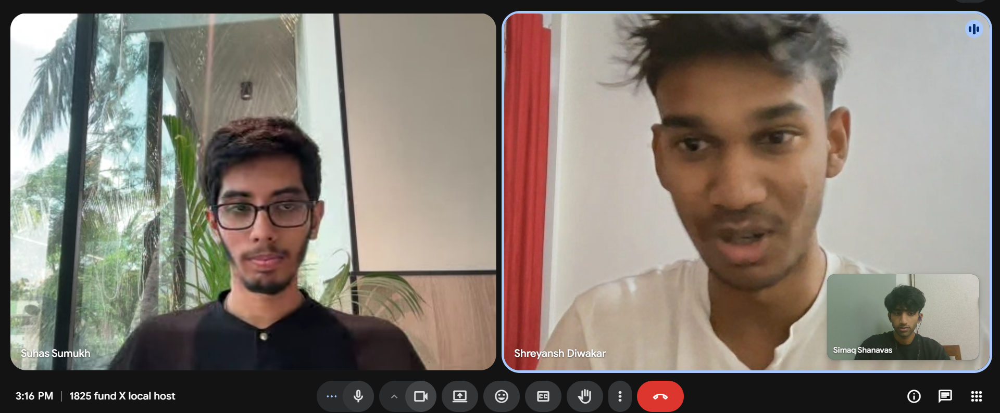
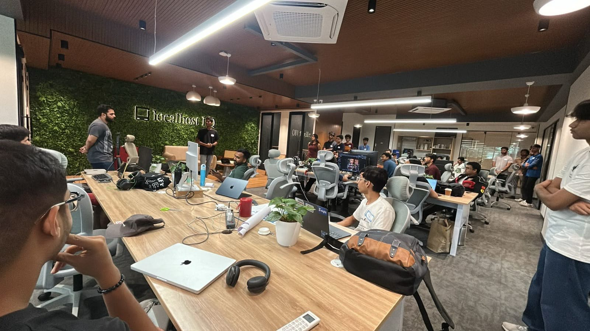

from 1825 fund to evm capital
why i started 1825 fund
in november 2025, shreyansh and i started the 1825 fund. the idea fit in one sentence: give small, no-strings grants to young people in india who are clearly talented but have no one willing to put money behind them yet.
i had seen this problem up close for years. there's a whole stretch of life, roughly 18 to 25 (hence the name), where you can be brilliant and still have zero access to capital. vcs want traction you don't have, grant programs want credentials you haven't earned, and your family isn't funding "an idea." so talented people stall at exactly the moment a few thousand dollars would change everything.
we didn't overthink the launch. one instagram story, a basic website, a google form. the first cheques were our own money. once people saw it was real, we raised $18,000 to keep it going.
it took off faster than either of us expected. hundreds of applications came in, we got to meet an unreasonable number of sharp young builders, and 3FVC and Z Fellows started fast-tracking the people we sent their way. a few of the founders we wrote first cheques to went on to raise over half a million dollars afterwards. watching that happen, after being the first money in, is a feeling i don't think i'll get tired of.
why i joined evm capital
in march i got talking to suhas at evm capital. it didn't take many conversations to notice we were two teams chasing the same goal from different directions, and that his team was about two years ahead of us on everything operational: the processes, the investor network, the pipeline, the platform.
at that point the honest question wasn't "how do we grow 1825?" it was "why does 1825 need to exist separately at all?" running a smaller parallel version of the same mission, just so we could keep our own name on it, would have been ego, not strategy. the money and the mentorship matter to founders. the logo on the cheque doesn't.
so we merged 1825 fund into evm capital, and i joined as a partner alongside shreyansh. this isn't an advisor title or some trial arrangement. we make investment decisions and write cheques, starting now.

view the merger announcement on instagram
and to be clear about what we're joining: evm capital has reviewed over 2,400 startup applications and backed 17 companies in two years. of those, five raised follow-on funding, three founders got into y combinator, one got into a16z speedrun, and one has already exited. nearly a third of the portfolio has gone on to raise from vcs, accelerators, or angels. for a fund writing first cheques this early, that hit rate is absurd.
nothing about how we treat founders changes. if we backed you at 1825, you still have us.
what's next
you can't find exceptional people at this stage by sitting behind a form and waiting. you find them in rooms. so in july we ran a meetup and a 24-hour hackathon at the localhost office in bangalore. i flew in from mumbai for it, the rest of the team came from further, and it was worth every bit of the chaos. huge huge shoutout to ronit for flying in all the way from london for this event. interest was far beyond what the venue could hold, and well past midnight the place was still loud with people building and arguing about what they were building.

that's the direction from here: more events, more time on the ground with builders, and first cheques into founders at the earliest stage anyone will take them seriously. probably earlier.
if you're young and building something, i want to hear about it. write to me.